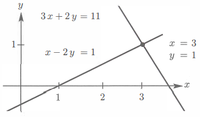
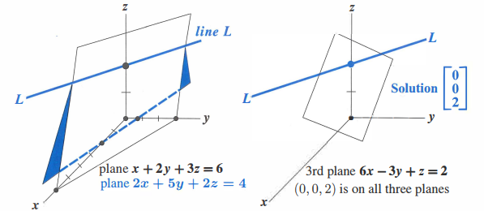
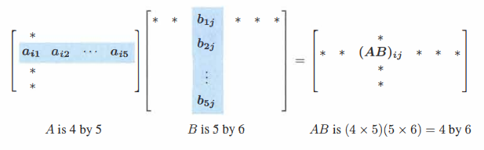
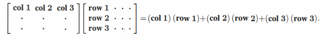
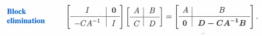

线性代数其实是从多变量的线性方程组引入的，多变量的线性方程组 ${\small A\textit{x} = b}$ 怎么样去理解，从 ${\small Row}$ 的方向去理解，就是超平面的交集，从 ${\small Column}$ 的角度看就是 ${\small A}$ 的 ${\small Column}$ 的 ${\small \textit{x}}$ 中每个变量的线性组合。然后解这个方程组的话，最朴素的想法就是消元嘛，然后消元这个过程又可以使用矩阵乘法来表示，于是就引入了矩阵的乘法以及乘法的法则。矩阵的乘法（ ${\small AB}$ ）从点积的角度去理解，就只能理解到它的计算法则；从 ${\small Row}$ 的角度看， ${\small AB}$ 的每一个 ${\small Row}$ 就是 ${\small B}$ 的 ${\small Row}$ 的线性组合；从 ${\small column}$ 的角度看， ${\small AB}$ 的每一个 ${\small column}$ 就是 ${\small A}$ 的 ${\small column}$ 的线性组合；从 ${\small column * Row}$ 看就能看出来，分块进行消元法的实质，从而引入了矩阵的逆。
线性代数的引入
1 线性方程组
1.1 从 ${\small Row}$ 来看
- 二维：

- 三维：

所以从行的来看就是超平面的一个交集。
$$
A\textit{x} = \begin{bmatrix}\ (row_1)\cdot\textit{x} \ (row_2)\cdot\textit{x} \(row_3)\cdot\textit{x}\ \end{bmatrix}
$$
1.2 从 ${\small Column}$ 来看
$$
{A\textit{x} = x_1\cdot\textit{Column_1} + x_2\cdot(\textit{Column_2}) + x_3\cdot(\textit{Column_3})}
$$
先标量乘法，后向量加法。
2 矩阵乘法
2.1 从点乘来看

2.2 从 ${\small Row}$ 来看
$$
\begin{bmatrix} row_1 \ \cdots \ row_n \end{bmatrix} \cdot B = \begin{bmatrix} row_1\ of\ AB \ \cdots \ row_n\ of\ AB \end{bmatrix}
$$
2.3 从 ${\small Column}$ 来看
$$
A\cdot\textit{x} = A[b_1 \cdots b_n] = [Ab_1 \cdots Ab_n]
$$
2.4 从 ${\small Column \cdot Row}$ 来看

2.5 从 ${\small Block\ Elimination}$ 来看
